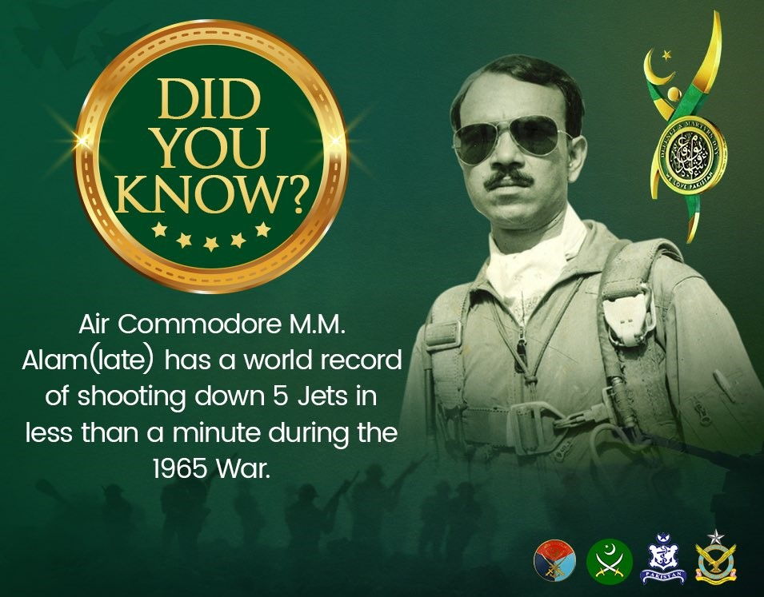
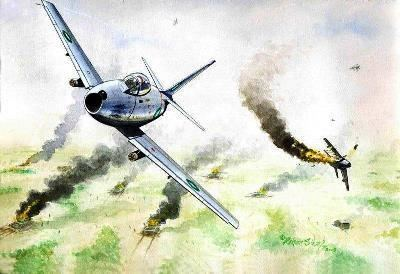
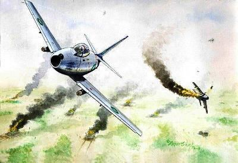

In a nation starved of heroes, Muhammed Mahmood Alamwas an inspiring figure. M.M. Alam as he was known, was the hero of the 1965 Indo-Pak war. He passed away on March 17 in Karachi, at the age of 78. Few people become legends in their own time, and M.M. Alam was certainly one of them, having established a combat record in the 1965 war, which has few equals in the history of jet air warfare.
Today, most young people might remember him more for the busy and popular thoroughfare
in Lahore that is named after him, but almost 50 years ago, on an early September morning
M.M. Alam shot down five enemy airplanes within a few minutes. In a blaze of glory, he
earned himself a Sitara-i-Jurat and became a world famous fighter pilot.
Admittedly, many years later this claim was to be disputed by historians who attributed
it to the “fog of war”, but as one retired Air Chief Marshal of the Pakistan Air Force
put it: “To us young pilots then, the news that M.M. Alam had shot down all those
aircraft in his F-86 Sabre came as a much needed morale boost and it really electrified
us. It inspired us to fight harder to defend our homeland. He was indeed a heroic figure,
regardless of what the historians might have to say later on about what happened or did
not happen in the skies over Sargodha.”
M.M. Alam, to be fair, never courted publicity nor bragged about his exploits. He was
in fact, a modest and quiet man, a nomad who would disappear every now and then,
resurfacing only to meet friends and family after retiring from the Pakistan Air Force.
He had no home as such (although most of his family lived in Karachi after migrating
from East Pakistan) and preferred to stay at various air force bases. He never married —
when I asked him why, he replied: “I’m not against marriage; it’s just that when you are
young you think that life is in your hands, but life is bigger. Someone once said all that
is desirable is not attainable — indeed all that is desirable is often not worth attaining.”
I could ask him such a personal question because he was my father’s friend and would
often come to our house when he was visiting Lahore (my father also served in the air
force). Often dressed in shalwar kameez, waistcoat and a Pathan topi, sporting a
trimmed beard and wire-rimmed glasses, M.M. Alam looked like a well-groomed Afghan
Mujahid and indeed he would have often come from a visit across the border. He would
urge me to read books on the subject of Jihad and lecture me on “the importance of
Jihad in Afghanistan for the security of Pakistan”. He himself was an avid reader and
told me he had collected a
library of over 3,000 books.

My father, with his considerably more liberal views, would argue with him while
I listened intently and later he would shake his head, saying: “I hope M.M. Alam’s
not becoming a fundamentalist.” But that was the beauty of the old school of
chivalrous air force officers — modern or conservative, secular or religious,
they banded together, exchanged ideas freely and laughed at the good times they
had shared.
M.M. Alam was one of those who supported the Afghan Jihad in the 1980s
purely for ideological reasons and never benefited financially from it unlike many
other retired and serving armed forces personnel. He believed in the resurgence of
Islam and was honest to the core. In fact, he died leaving few belongings save his
precious books on which he would spend all his money.
His radical theories of Pan-Islamism aside, he was a cultured man with a
colourful and unusual life history. Born in Kolkata in 1935 to a family of
civil servants, he witnessed first hand the travails of partition. He was only
11 when riots broke out shortly after the killing of Muslims in Bihar. After
partition, M.M. Alam and his large family of 11 brothers and sisters moved to
Dhaka, then East Pakistan. He recalled, “You could say that I was among the
first youth of this country. I grew up with the ideal of a new country called
Pakistan. What we lacked in education, we made up for in enthusiasm”. After
completing his Matric in Dhaka, M.M. Alam applied to the newly created Pakistan
Air Force. He had become an aviation enthusiast because of World War II when
Kolkata was targeted by Japanese fighter planes and had to be defended by the
Royal Air Force.
Having completed his initial training at the Pakistan Air Force Academy in
Risalpur, he was sent to Karachi for ‘fighter conversion’ and then onto Peshawar
to learn all about fighter flying in 1958. Pakistan had just acquired American
jets and M.M. Alam, who had excelled in gunnery competitions, was promoted to
Squadron Leader in 1964. He earned the nickname of Peanut Alam because he was
small and cute, and he was a popular commander. He told me: “We literally lived
for flying in those days. Our means were few and our needs were few. All we ever
talked about or dreamt about was flying. For me, there was little else in life —
save for reading. Books were my passion.”
.jpg) 

On September 6, 1965, the Indians cro ssed the international ceasefire line and war became inevitable. The Pakistan Air Force was already on high alert after the Rann of Kutch disturbances. “We had to fight an air force three times our size,” he explained to me. “I sincerely believe that if the order to attack had come earlier, we could have destroyed the Indian Air Force on the ground, in an action similar to what the Israelis did to the Arabs in the Suez war.” M.M. Alam’s moment of glory was to come the following day, when in anticipation of a reciprocal attack, he was patrolling the air space above Sargodha before dusk when his squadron intercepted six Indian Hunters. In those few minutes in the sky he more than fulfilled his destiny. The rest, as they say, is just history. May he rest in peace.